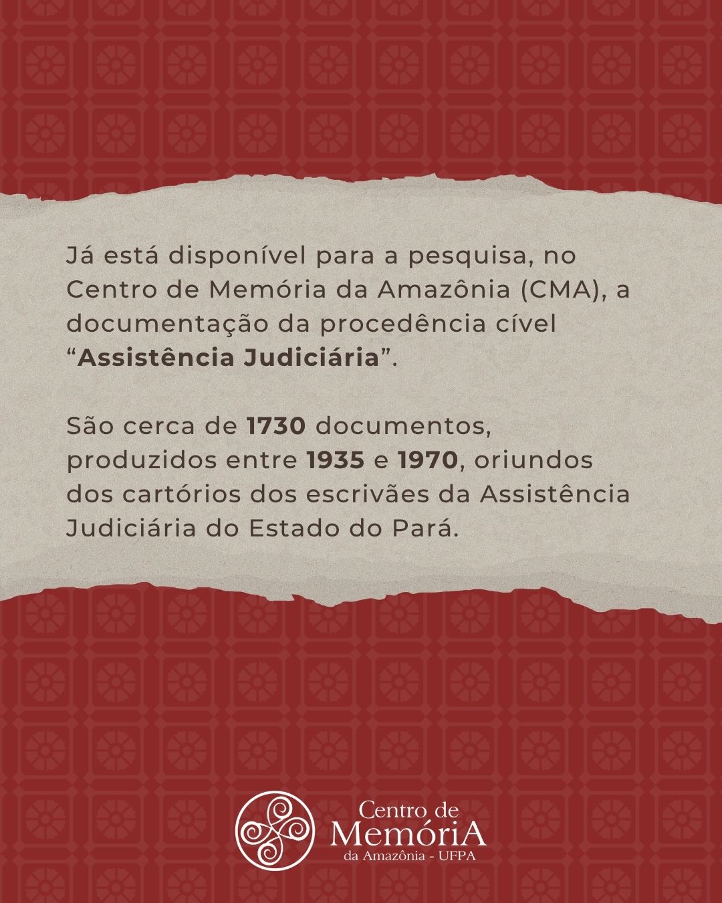
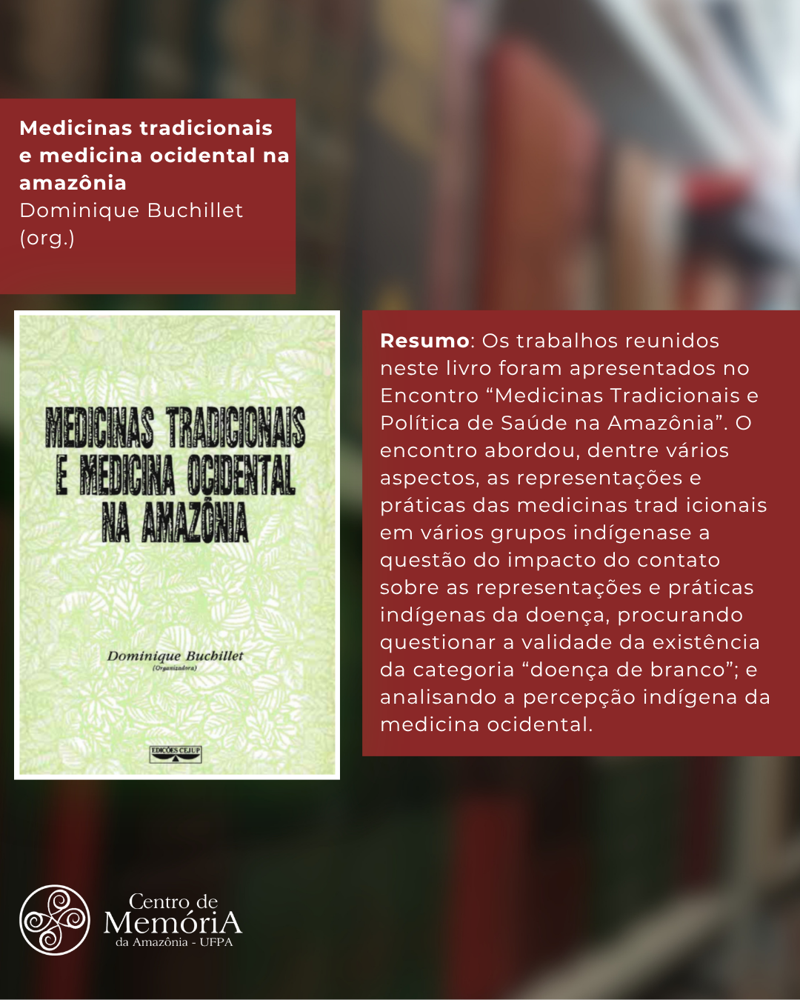
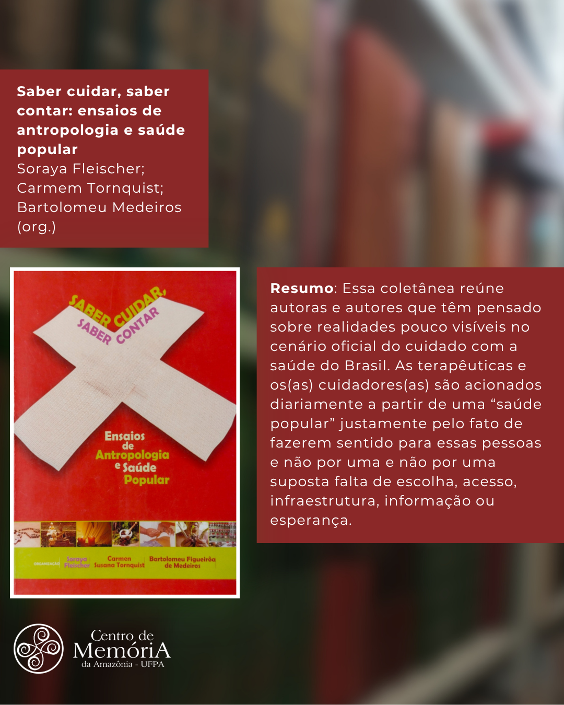
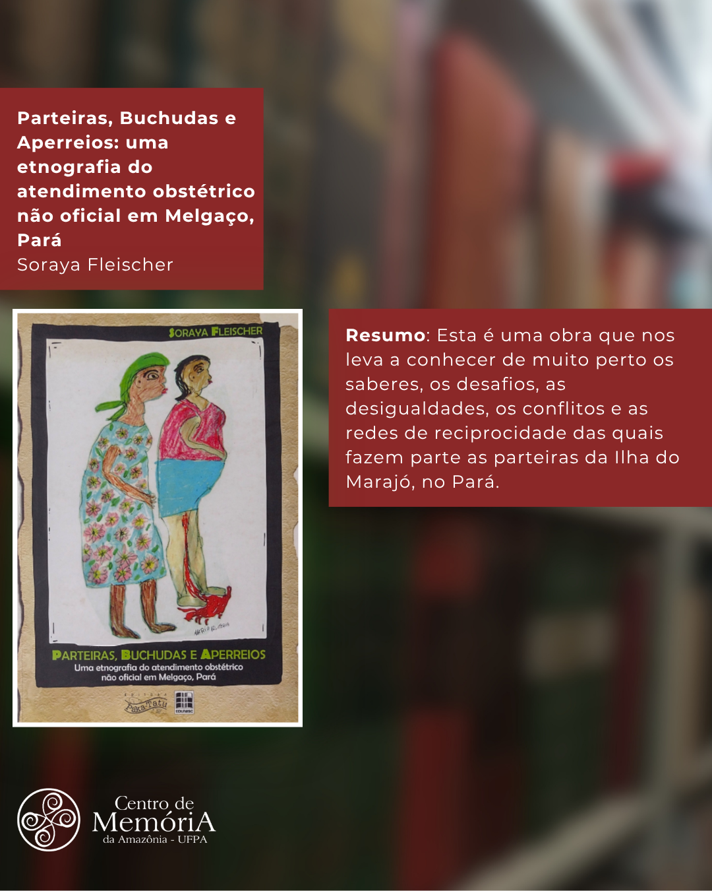
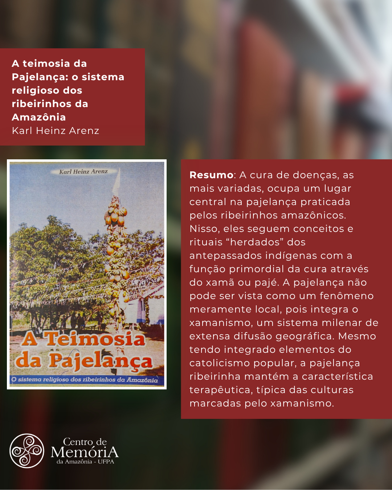
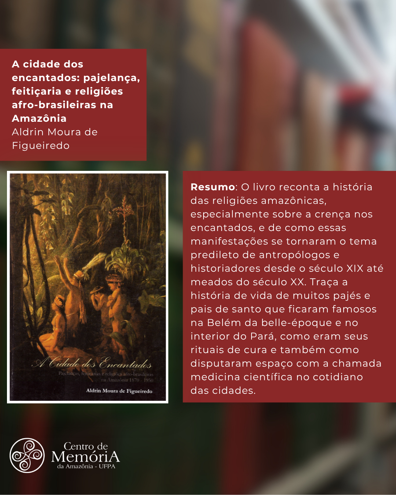
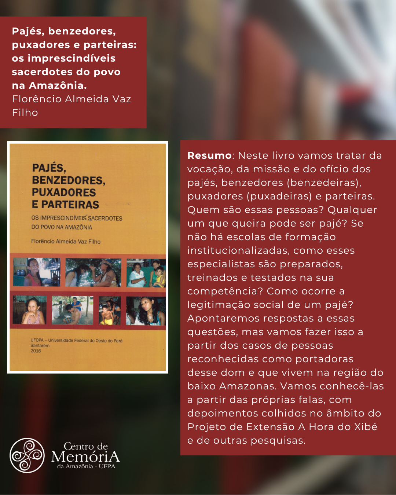

NOTÍCIAS E ACONTECIMENTOS
Registros Fotográficos de Belém do Início do Século XX
Devido a uma falha mecânica nas estantes deslizantes do acervo do fundo TJPA, as seguintes procedências e seus respectivos documentos estarão temporariamente indisponíveis para a pesquisa:
SÉRIE CÍVEL:
11ª Vara Cível - Cartório Fabiliano Lobato
Assistência Judiciária
Distritos Cíveis
Comarcas dos Interiores - Cível
SÉRIE CRIMINAL:
1ª - 10ª Varas Penais
1º - 3º Distritos Criminais
1ª - 4ª Pretorias
Comarcas dos Interiores - Criminal
A redisponibilização do acesso à pesquisa dos documentos será feita logo após o conserto das estantes, e será informada pelas redes sociais do CMA.


Documentação Cível "Assistência Judiciária" Disponível para Pesquisa
Já está disponível para a pesquisa, no Centro de Memória da Amazônia (CMA), a documentação da procedência cível “Assistência Judiciária”. São cerca de 1.730 documentos, produzidos entre 1935 e 1970.
A assistência judiciária gratuita aos necessitados foi estabelecida com base na Constituição brasileira de 1934. Pessoas pobres no sentido da lei são os principais sujeitos presentes na documentação, que em grande parte, abarca os Direitos de Família e Sucessões.







Dicas de leitura sobre a pajelança, medicina e práticas populares na Amazônia
1. Religiões afro-indígenas e pajelança cabocla
As religiões afro-indígenas, como a própria denominação revela, tiveram origem entre os indígenas, em especial os tupi, e entre os escravizados africanos. Também foram influenciadas pelo cristianismo europeu, incorporado no Brasil pelos portugueses. Candomblé, umbanda, macumba, pajelanças caboclas e encantamentos são alguns exemplos de rituais do cotidiano religioso amazônico. Os vinte artigos presentes visam analisar a forma de xamanismo bastante difundida na Amazônia, a pajelança cabocla.
2. A Ilha Encantada: medicina e xamanismo numa comunidade de pescadores
apresenta a medicina popular da povoação de pescadores – Itapuá -, que se localiza no município de Vigia, no Estado do Pará. Analisa os conceitos e práticas sociais ligadas às doenças não-naturais reconhecidas pela população de Itapuá, investigadas nos domínios: agentes causais (espíritos, seres humanos e astros), doenças (com atenção particular ao subconjunto das não naturais) e especialistas no seu tratamento. Procura elucidar e analisar sua estrutura, nos casos estudados, que é de tipo taxonômica, analisando não apenas o aspecto semântico, mas também o modo como os membros da comunidade vivenciam a cultura, no que diz respeito à medicina.
3. Medicinas Tradicionais e Política de Saúde
Os trabalhos reunidos neste livro foram apresentados no Encontro “Medicinas Tradicionais e Política de Saúde na Amazônia”. O encontro abordou, dentre vários aspectos, as representações e práticas das medicinas tradicionais em vários grupos indígenas e a questão do impacto do contato sobre as representações e práticas indígenas da doença.
4. Medicina popular na povoação de Itapuá
Apresenta a medicina popular da povoação de pescadores – Itapuá -, que se localiza no município de Vigia, no Estado do Pará. Analisa os conceitos e práticas sociais ligadas às doenças não-naturais reconhecidas pela população de Itapuá, investigadas nos domínios: agentes causais e especialistas no seu tratamento.
5. Saúde popular e cuidadores invisíveis
Essa coletânea reúne autoras e autores que têm pensado sobre realidades pouco visíveis no cenário oficial do cuidado com a saúde do Brasil. As terapêuticas e os cuidadores são acionados diariamente a partir de uma “saúde popular” justamente pelo fato de fazerem sentido para essas pessoas e não por uma suposta falta de acesso.
6. Saberes das parteiras da Ilha do Marajó
Esta é uma obra que nos leva a conhecer de muito perto os saberes, os desafios, as desigualdades, os conflitos e as redes de reciprocidade das quais fazem parte as parteiras da Ilha do Marajó, no Pará.
7. Magia, religião e modernidade em Manaus
O presente livro trata de discutir a relação entre magia, religião e modernidade, partindo do caso dos rezadores da cidade de Manaus. A questão inicial que motivou toda a reflexão é como que formas tidas como arcaicas ainda se apresentam num mundo desencadeado pela ciência e pela técnica.
8. A cura e a pajelança ribeirinha
A cura de doenças ocupa um lugar central na pajelança praticada pelos ribeirinhos amazônicos. Nisso, eles seguem conceitos e rituais herdados dos antepassados indígenas com a função primordial da cura através do xamã ou pajé, integrando o xamanismo, um sistema milenar de extensa difusão geográfica.
9. História das religiões amazônicas
O livro reconta a história das religiões amazônicas, especialmente sobre a crença nos encantados, e de como essas manifestações se tornaram o tema predileto de antropólogos desde o século XIX. Traça a história de vida de muitos pajés e pais de santo que ficaram famosos na Belém da belle-époque e no interior do Pará.
10. A vocação dos pajés e benzedeiras
Neste livro vamos tratar da vocação, da missão e do ofício dos pajés, benzedores, puxadores e parteiras. Como esses especialistas são preparados, treinados e testados? Apontaremos respostas a partir dos casos de pessoas reconhecidas como portadoras desse dom e que vivem na região do baixo Amazonas, com depoimentos do Projeto A Hora do Xibé.
Registros Fotográficos de Belém do Início do Século XX
As seguintes fotos compõem uma pequena parte das fotografias localizadas no acervo de Clóvis Moraes Rêgo, parte das Coleções Pessoais da Biblioteca do Centro de Memória da Amazônia.
As fotos são identificadas como registros de Belém do início do século XX, trazendo belíssimas fotografias de praças, ruas da capital e do então Intendente de Belém, Antonio Lemos. Todo esse rico acervo iconográfico encontra-se disponível para consulta e pesquisa em nosso espaço físico. Disponiveis também em nossa galeria digitla. Confira! Clique aqui↗